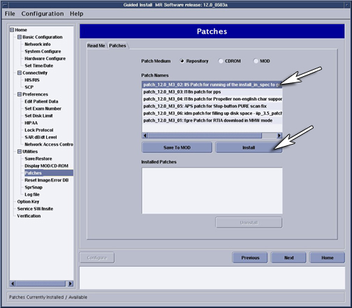
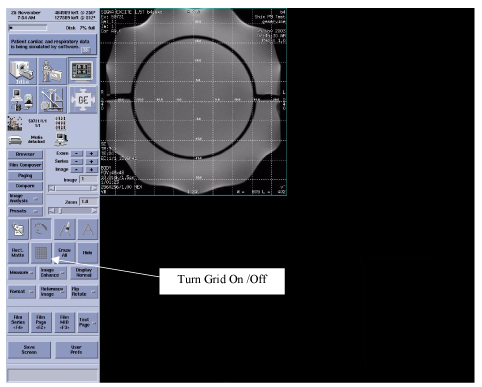
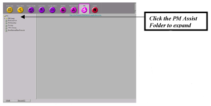
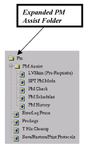
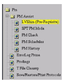
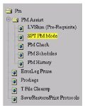

- 00000018WIA30619F20GYZ
- id_131060741.4
- Jul 5, 2019 11:18:59 PM
PM Assist Signa Excite (11.1 & 12.x)
Prerequisites
| Required persons | Preliminary requirements | Procedure | Finalization |
|---|---|---|---|
| 1 | Not Applicable | 2 hours | Not Applicable |
| Item | Quantity | Effectivity | Part number | Manufacturer |
|---|---|---|---|---|
| LVShim Phantom Assembly | 1 | - | - | - |
| Nesting Plate Assembly | 1 | - | - | - |
| DQA Phantom (for 11.x) or TLT Sphere (for 12.x) | 1 | - | - | - |
| Head Coil | 1 | - | - | - |
| Body Sphere and Loader | 1 | - | - | - |
| Head Sphere and Loader | 1 | - | - | - |
| Service Key | 1 | - | - | - |
| Blank MOD for Saving Patches | 1 | - | - | - |
| ||||
| Condition | Reference | Effectivity |
|---|---|---|
|
System release 11. 1 or higher and completion of a successful LVShim is a prerequisite to performing the SPT procedure, IBIS Specifications (11.1 & 12.x). For more information about LVShim, refer to the LVShim Process. | - | - |
About this task
Information covered in this material include:
-
(For 11.1 software only) PM Patch Information
-
(For 11.1 software only) EPI White Pixel PM Mode
PM Patch Information
Procedure
- To install patches that were downloaded to the scanner, log
out to the root level by doing the following:
- Right mouse click on the background, select Service Tools, then System Restart. The system will shut down.
- When the Log In window displays, log in as root with the password, operator.
- When the Guided Install menu displays,
click on Patches to display the patches downloaded
via Broadband in the Repository section.
Figure 4. Patch Installation from Guided Install 
- Click on the Patches selection, and the downloaded patches will display in the Repository section. If necessary, refer to Installing Service Packs for instructions on installing patches.Note:
(For 12.x only) After installation, patches can be archived to MOD. To archive patches, install MOD and Select Save to MOD. This will allow restoration of patches via MOD if the software crashes.
Figure 5. Patch Archive to MOD 
LVShim
Procedure
- Landmark the Shim Phantom as shown in the illustration below.
(At this time, only the Shim Phantom should be placed on the cradle.)
Figure 6. Landmark for LVShim 
- Click on the Scan icon shown in Figure 7 to launch the Patient Information window.
Figure 7. Patient Information Window 
- Select New Pt, and the Patient
Information window will launch with the Patient Protocols
shown in the illustration below.
Figure 8. Enter Patient Protocols 
- To run the LVShim procedure, type the following:
-
geservice in the Patient ID field and 300 in the Weight Lb field shown in the illustration below.
-
A Patient Name for the LVShim test that will be easy to find in the browser (Shim PM Test in this example)
Figure 9. Patient Information 
-
- From the Protocols selection box, select 0.19 LVShim in the Protocols column and LVShim Localizer, Cal:Syst in the Series column. (See the illustration below.)
Figure 11. Protocols Selection Box 
- In the browser, locate the image created when the LVShim Localizer,
Cal:Syst scan was performed.
- Find the Patient Name in the Examination column (left column), and look for the Patient Name entered in Step 4 (example used in the Shim PM test).
- Click on Shim PM Test, and the scans
will now display in the right column of the illustration below.
Figure 14. Image Browser Window 
- Click on the appropriate series in the right column. If a new Patient Name was used in Step 4, there will only be one series (one image) with the description: Body,Cor,2 displayed in the right column at this time. (See Figure 14.)
- Double click on the image line in the lower window of Figure 14 to automatically open the image shown in Figure 15.
Figure 15. Phantom Centering Check 
- To start the LVShim scan, click in the following order: Save Series => Download => Scan as shown in the illustration below. At the completion
of the scan sequence, proceed to the LVShim Tool to verify the results.
Figure 17. Start LVShim Scan 
- To access the Common Service Desktop (CSD), click on the Tools
icon shown in the illustration below.
Figure 18. Tools Icon on CSD 
- Click on the PM Assist folder in the left
column of the PM home page shown in the four illustrations below.
This will expand the folder and show the PM selections.
Figure 20. PM Assist Folder on PM Home Page 
Figure 21. Close Up of PM Assist Folder 
Figure 22. Expanded PM Assist Folder 
Figure 23. Close Up of Expanded PM Assist Folder 
LVShim Tool
Procedure
- Click on LVShim in the expanded PM folder shown in the two illustrations below. (The right
side of the screen provides more details about LVShim and a link to
start the LVShim PM tool.)
Figure 24. LVShim Page 
Figure 25. Expanded PM Folder 
- Click on the link: Click here to start this tool shown in Figure 24 to start the LVShim Tool. (See the illustration
below.)Note:
For TwinSpeed, when a pop-up displays with the message, Whole or Zoom??, select Whole.
Figure 26. Open LVShim Tool 
Default Values for LVShim Analysis Tool:
-
Shim Type = Gradient
-
Image Data = This will auto fill with the latest LVShim Images.
-
Operation Mode = Service
-
Display Mag and Phase Diff Images = No
-
Calibration File = Iv_brn_acgd_3gc_45dsv
-
Existing Current In Each Coil
Note:Verify that the image data matches the exam series image scanned in Figure 14.
-
- To accept the new Grad Shim values. type y and press Enter. (See the illustration below.)
Figure 28. Accept Grand Shim Values 
- When the tool asks: Exit LVShim?, type n and press Enter. (See the illustration
below.)
Figure 29. Remain in LVShim Tool 
- Return to the Scan Prescription screen,
and click the Scan button. When scans are completed,
return to the LVShim Tool shown in the illustration below and press Enter.
Figure 30. Return to LVShim Tool 
- The LVShim tool will automatically select the 12 new images
created by the last scan. Press Enter to start
the analysis. (See the illustration below.)
Figure 31. Start LVShim Analysis  Note:
Note:Grad Shim is capable of reducing the X (1,-1); Y (1,1); and Z (1,0) harmonics. If any of the higher order harmonics are out of specification, a Supercom Shim may be required.
- In the example shown in the illustration below, the LVShim has
now passed. Depending on the system, it may take only one pass or
several. Repeat the procedure until the system passes the LVShim test.
Figure 32. Grand Shim Passed 
- When the tool asks: Exit LVShim?, type y and press Enter. (See the illustration
below.)
Figure 34. Exit LVShim Tool 
System Performance Testing (SPT)
Procedure
- Landmark the phantom as described below, using the appropriate
DQA Phantom. (Remove the LVShim Phantom for this test.) The process
for proper landmark is:
- Insert the DQA Phantom in the head coil, and turn on the alignment lights.
- Move cradle so the alignment lights align with the center mark on the DQA Phantom.
- (For 12.x) Replace the TLT Sphere and loader in the head coil. For 11.x leave the DQA phantom as is.
- Position the TLT Sphere and loader so that the centering mark
on the TLT loader is aligned with the alignment lights.
Figure 35. Phantom Positioning for SPT, PM Mode 
- From the CSD home page, select the PM Mode by clicking on it in the expanded PM folder on the left side of the page (shown in the two illustrations
below).
Figure 36. SPT PM Page 
Figure 37. Select SPT PM Mode 
- The SPT screen shown in the illustration
below will display. (For the PM SPT mode, all the tests are preselected
and cannot be changed. The test takes just over one hour to complete.)
For more information on System Performance Tests, including phantom set up, follow the System Performance Test (SPT) procedure.
-
The remaining test time will display in the upper right-hand corner of the SPT screen shown in the two illustrations below.
Figure 40. Remaining Test Time 
Figure 41. Close Up of Remaining Test Time 
-
Test progress and results will display in the lower window of the SPT screen shown in the illustration below.
Important: Failures must be resolved and the SPT must be re-run before proceeding to the PM Check. SPT in PM mode executes on a TRM System in the Zoom mode only. If failures occur, verify that all subsequent iterations are run in Zoom mode for TRM Systems.
Figure 42. Test Progress and Results 
-
EPI White Pixel PM Mode
Procedure
- From the CSD, select the PM tab, select
EPI White Pixel PM Mode, and click on the link: Click here to start this tool. (See the illustration below)
Figure 43. Start EIP White Pixel PM Mode Tool 
PM Check
Procedure
- To verify that the PM completed successfully, click on PM Check. (See the two illustrations below.)Note:
PM Check will only pass if the LVShim test passes within 24 hours of running a successful SPT.
Figure 44. Start PM Check 
Figure 45. Access PM Check 
- The PM Check window opens, and the information
shown in the illustration below displays.
Figure 46. PM Check Tool Opens 
- As seen in the example above, Body GRE Stab has a SEVERE failure.
-
This must be resolved for the PM Assist to be considered completed. If the FE does not resolve Severe issues within 21 days, the system will notify the operator of the problem.
-
For the PM Assist to be successful and complete, all test results must pass. (See the illustration below.)
Figure 47. Indication that Tests Passed 
-
PM Schedule
About this task
The PM Schedules tool will show the following status:
-
Date of last LVShim and SPT PM Mode runs on the system,
-
When the next Planned Maintenance is due,
-
Marginal/Severe failures remaining from last Planned Maintenance, and
-
When the clinical user will be notified of the remaining Severe failures
Procedure
- Click on the link: Click here to start this tool (shown in the illustration below) to start the PM Schedules tool.
Figure 48. Start PM Schedules Tool 
Figure 49. Access PM Schedules Page 
PM Never Performed on This System
Procedure
- Enter your Name or initials, and press Enter. (See the illustration below.)
Figure 50. Enter Name or Initials 
- Enter the Next scheduled PM date, and press Enter. (See the illustration below.)
Figure 51. Schedule Next PM Date 
System Following Normal PM Schedule
Procedure
- The tool will display when the last PM was performed and when
the next PM is scheduled. (See the illustration below.)
Figure 52. Last PM Performed and Date Next PM Scheduled 
- Enter the date the next PM will be performed, making sure the
date is within the specified time limit provided by the tool, and
press Enter. (See the illustration below.)
Figure 53. Enter Date for Next PM 
PM History
Procedure
- Click on PM History in the expanded PM folder. (See the two illustrations below.) The right
side of the screen will provide more details about PM History and
a link to start the PM History tool.
Figure 54. Start PM History Tool 
Figure 55. Access PM History Page 
- Click on the link: Click here to start this tool. (See Figure 54.)
Figure 56. Information on PM History Page